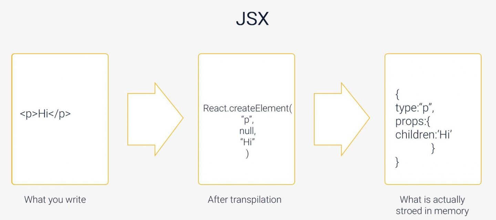

JSX (JavaScript XML) is a key feature of React that lets developers write HTML-like code inside JavaScript. It makes building UI components easier and more intuitive. In this blog post, we'll explain how JSX parsing works and how it turns your code into something the browser can understand.
What is JSX ?
JSX is a syntax extension for JavaScript, introduced by React, that allows developers to write HTML-like code within their JavaScript files.
How Does JSX Get Transformed?
1. Writing jsx
2. Babel Transpilation
A tool called Babel converts JSX into JavaScript. This step is necessary because browsers don’t understand JSX directly.
Why do we use babel ?
Babel is a JavaScript compiler that allows you to use next-generation JavaScript today. It helps in transforming JSX into a format that browsers can understand. Modern JavaScript features and JSX are not natively supported by all browsers, especially older versions. Babel transpiles this code into a version of JavaScript that can run in any browser. By using Babel, you ensure that your React code is compatible across different environments, making your applications more robust and widely accessible. Babel also enables other transformations, such as converting ES6+ syntax to ES5, which further broadens compatibility. Learn more about Babel.
3. Transformend JavaScript
Babels changes the JSX to :
Here, React.createElement is a function call that creates a React element.

What Does React.createElement Do?
React.createElement takes three arguments:
Example :